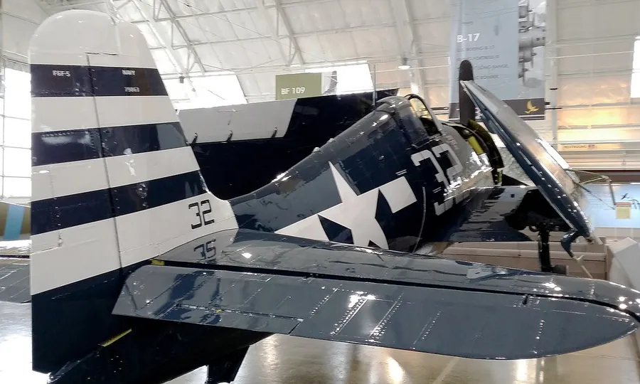

Hellcat operations · 1943–1945
The Hellcat arrived after the Wildcat had held the line and quickly became the dominant US Navy fighter. It fought from fast carriers, escort carriers, Marine bases and Royal Navy carriers, with F6F-3, F6F-5 and F6F-5N night-fighter routes offering very different modelling subjects. The best builds are anchored by squadron, carrier and date: tri-colour 1943–44 machines, late Gloss Sea Blue aircraft, ace markings, night-fighter radar pods and hard carrier handling wear.

Role & strengths
- Dominant US Navy carrier fighter from 1943 onward
- F6F-3 tri-colour and F6F-5 Gloss Sea Blue routes
- F6F-5N night fighter with radar pod
- Famous ace aircraft and carrier air group markings
- Carrier deck wear, salt fading, radial stains and Pacific sun
Key theatres
- Fast carrier task force operations across the Pacific
- Philippine Sea, Leyte Gulf, Iwo Jima and Okinawa
- USMC shore-based Pacific operations
- Royal Navy Hellcat operations in the Atlantic and Pacific
Specification F6F-5
Survivors today

Surviving Hellcats are useful for cowling shape, gear stance, wing fold, cockpit framing, drop tanks, rockets and the broad late-war naval fighter profile.
View survivorsTimeline highlights
Build this Hellcat as…
Choose the variant and carrier first. F6F-3 tri-colour, F6F-5 Gloss Sea Blue, F6F-5N night fighter, Fleet Air Arm Hellcat and USMC shore-based routes all need different finishes.
Aircraft identity
F6F-3, F6F-5 and F6F-5N differences matter. Check cowling, windows, rockets, radar pod and markings before buying decals.
Tri-colour and Gloss Sea Blue age differently. Do not weather every Hellcat like a faded island-based Wildcat.
Paint scheme cards
Core 1943–44 Hellcat route. Add sun fade, salt, cowling grime and deck handling.
Gloss Sea Blue needs subtle sheen variation, exhaust staining and restrained chipping.
Radar pod, dark finish, subdued weathering and night operations context define the build.
Fleet Air Arm subjects need British markings, carrier weathering and theatre/date checks.
Campaign cards
Fast-carrier Hellcats dominate Japanese air attacks. Use VF-15, VF-27 and other carrier air group routes.
Carrier-specific builds allow deck wear, squadron codes, kill markings and air group colours.
F6F-5N subjects need radar pod, dark finish handling and different weathering logic.
Royal Navy Hellcats give a different visual identity with British markings and carrier service.
Build difficulty and related guides
Medium. Kits are often good, but wing fold, cowling, stores and finish choice matter.
Medium-high. Tri-colour fade and Gloss Sea Blue sheen both need restraint.
Medium. Night-fighter radar pod, rockets and carrier-specific details add research burden.
F6F Hellcat squadrons and units
Sortable Hellcat unit cards covering fast-carrier squadrons, USMC units, night-fighter detachments and Fleet Air Arm Hellcat routes.
F6F Hellcat operating map
Airfield info
Click a marker to show linked Hellcat unit cards and modelling notes.
Campaign timeline
Survivors
Books and reference sources
F6F Hellcat build guide
F6F Hellcat videos, photos and archive material
Media replaces the old separate walkaround tab: cockpit, exhaust, undercarriage, markings, survivor references, archive imagery and video cards are grouped here.